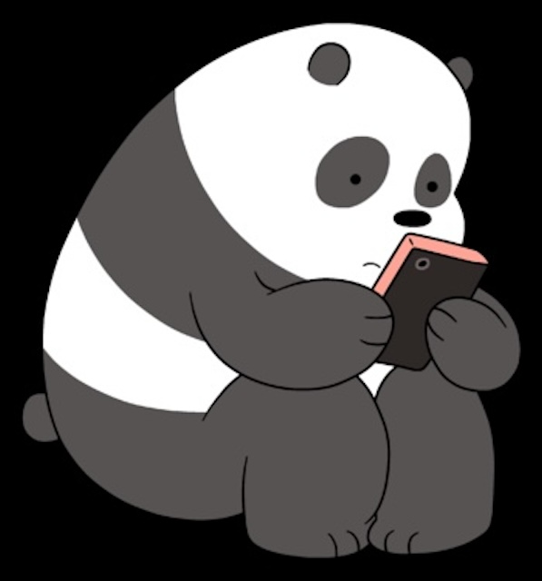
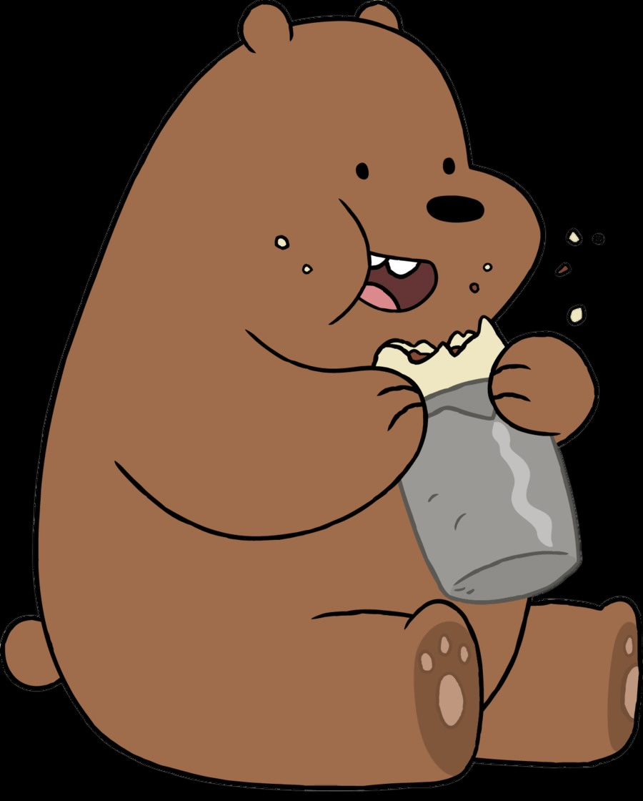
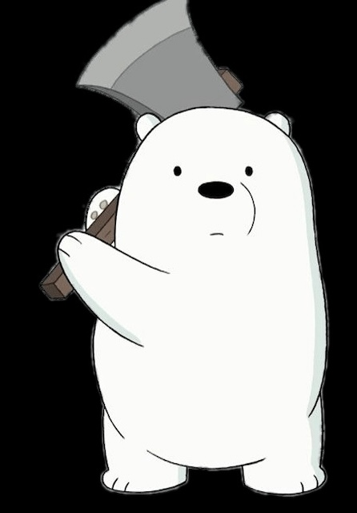

Panda
Panda is the middle brother in We Bare Bears. He loves using his phone, taking selfies, and staying connected online. Panda is sweet and sensitive, but he can be shy around people he likes.

Panda is the middle brother in We Bare Bears. He loves using his phone, taking selfies, and staying connected online. Panda is sweet and sensitive, but he can be shy around people he likes.

Grizzly is the oldest bear in We Bare Bears. He is energetic, confident, and always ready for an adventure. Grizzly cares deeply about his brothers and likes bringing people together.

Ice Bear is the youngest brother in We Bare Bears. He is quiet, calm, and very skilled at cooking and fixing things. Ice Bear cares about his brothers and often protects them.